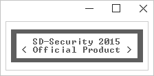

A simple script, to show how easy it is to develop plugins for SD-Security
PreBoot.bat:
@echo off
color f0
mode con: cols=26 lines=6
title SDS Production Mode
cls
echo.
echo €flflflflflflflflflflflflflflflflflflflflflfl€
echo € SD-Security 2015 €
echo € ^< Official Product ^> €
echo €‹‹‹‹‹‹‹‹‹‹‹‹‹‹‹‹‹‹‹‹‹‹€
This simple plugin, would override the default loading screen, to a custom version (as seen above)